我用 WorkBuddy 花费近万积分耗时近一个月，重置了班级工作台 2.0
上一篇写的是"一个文件，双击就能用"。
这一篇写的是"一个班，连上同一个地址就能用"。
一个班五十来人，一节课点一遍考勤，点到第三节就烦了。
这是我上一次做班级工作台的起点。
10 月 26 日，我发了那篇《我不会写代码，但让 AI 给我写了 2.4 万行，做了个班级工作台自己用》。后台的消息大概分三类。
一类问：文件在哪下？
一类问：能不能几个老师一起用？
还有一类问：学生能不能也登进来？
前两个我能答。第三个答不了。
因为那个东西是一个 HTML 文件。数据存在浏览器里，一台电脑一个人用，学生进不来。
所以我把它拆了，重写了一遍。
这是 2.0。
一、先说清楚：这不是升级，是换了个东西
1.0 的定位，是"给老师一个人用的记事本"。
打开就能记，关掉浏览器就结束，数据在 localStorage 里，AES-256 加密，密码不存明文。这些我当时很得意，现在依然觉得是对的——对"一个人用"这个场景，它是最优解。
但它有三个天花板，撞上去才知道疼。
第一，换台电脑就断了。 导出备份、拷 U 盘、再导入，能用，但麻烦。机房上课想换一台机器，得先折腾五分钟。
第二，只有我一个人看得到。 学生不知道自己交没交、第几节签到、座位在哪。信息到我这里就断了。
第三，所有"发放"都得靠嘴。 发一份学习单，得挨个说"打开这个网址"；发一份资料，得在群里刷屏；催作业，得拿着名单一个个 @。
所以 2.0 换了一副骨架：
| 1.0 | 2.0 | |
|---|---|---|
| 形态 | 一个 HTML 文件 | 服务端 + 教师端 + 学生端 |
| 数据 | 浏览器 localStorage | 服务器 SQLite，29 张表 |
| 谁能用 | 一台电脑、一个人 | 局域网内教师电脑 + 机房的学生电脑 |
| 实时 | 无 | SSE 推送，改完学生端就变 |
| 断网 | 能用 | 能用（局域网，不需要外网） |
| 装法 | 双击 | 双击，或 Docker 一条命令 |
一句话：1.0 是记事本，2.0 是一套小系统。但它没有变成那种要培训一下午的系统——教师端还是一条左侧导航，打开就能干活。
顺便回答一个问题：为什么不直接用现成的
这一年我被问得最多的一句是：ITtools、LearnSite 这些信息科技教学平台不都能用吗，为什么还要自己写一个？
能用，我都试过，而且都是好东西——尤其对我们信息科技这一科，它们比自己攒表格强太多。问题不在功能，在定位：它们是"上好一节课"的平台，我要的是"管好一个班"的工具。
ITtools 是一套信息科技教学辅助平台，主打"备—教—学—评"一体化：20 多个教学模块可以按课搭积木，图文页面、课堂测验、作品互评、学生网盘、指法练习都有，最实在的是操作题自动批阅——Word、PS、Python，还有计算思维那类文本通用操作题，交上来就能判。一节操作课上完，学生当堂就知道错在哪，这在以前得我一台一台机子去看。
我卡在哪：它天生是为"这一节课"设计的，模块都是课堂活动的积木。可我课后要算的那几笔账——这个班按节次的考勤、这次考试按班的成绩、这门课的资料按班归档——还得回到 Excel 里手工再算一遍。它不吃我这套"一个班一条线"的数据。
LearnSite 是一款专为中小学信息技术课堂做的开源教学辅助平台，最早是温州周老师一个人写起来的，现在由上海倪老师和各地一线老师一起维护。它比我想要的还完整：学案配递进式活动，作品提交、作品互评、学生作品档案、课堂测验、打字练习、资源下载都在里面，一节课从"发任务"到"收作品"能闭环，2026 年的版本还加了网页课件活动和物联网、AI 体验。
我卡在哪：主要是部署。它是 .NET + SQL Server 那一套，得装在常年开着的 Windows 服务器上，我校没有这样一台机器，也没有人能长期维护数据库。至于学生端面向机房电脑这件事，跟我的场景倒是完全一致——我的课都在机房上，学生也是坐在同一台机器前操作。
飞象老师 课堂互动做得好，抢答、随机点名都顺手。但数据在平台那一侧，讲完一节课，痕迹也就散了，回头想按班看趋势，得另外再整理一遍。
| 平台 | 定位 | 它擅长的（教学场景） | 我卡在哪 |
|---|---|---|---|
| ITtools | 信息科技教学辅助平台 | 20+ 教学模块按课搭建，操作题自动批阅当堂反馈 | 围绕"一节课的活动"组织，跨课时的班级账要另算 |
| LearnSite | 信息技术课堂开源教学平台 | 学案+递进式活动、作品提交互评、作品档案、打字练习 | .NET + SQL Server 部署，长期维护顶不住 |
| 飞象老师 | 课堂互动平台 | 抢答、随机点名顺手 | 数据留在平台上，按班复盘要重做 |
所以我不是要再做一个课堂平台——上面那两个，在"上好一节课"这件事上都做得比我好。我要的是把"一个班的日常"串起来：学生坐下要签到，讲台要把任务放出去，做完了要能当场看见，交上来的文件要能按班按人归好，作业和成绩要能落回同一个班里，下次上课还得翻得出上次的记录。
这些事，在我这里分散在班级群、Excel、表单和课堂平台之间，一节课就要切几次窗口，还得手工把数据搬来搬去——搬的过程中一定会漏，漏了就没人补。
所以 2.0 不是"再多一个工具"，是把这几件事绑到一份数据上：班级和学生共用一个名单，座位、考勤、作业、成绩都引用它；讲台和学生桌面看的是同一份数据；交上来的文件按"课程 / 班级 / 学号-姓名"自动归位。
二、一页一页看
这一节 12 张图，全部来自一套演示数据——姓名、电话、成绩都是编的。
图的顺序，就是你打开工作台之后的顺序。每张图下面，就是这一页在干什么。
学生端一共六个页签，先给一张总表，后面逐页说：
| 页签 | 一句话说明 |
|---|---|
| 今日 | 签到 · 课堂学习单 · 要交的作业 |
| 作业 | 全部作业与提交状态，点一条看详情 |
| 资料 | 老师下发的资料，点一下直接打开，不用下载 |
| 测验 | 老师发给本班的检测，点开作答，按设置显示答案与分数 |
| 座位 | 座位表，讲台固定在上方，高亮自己的位置 |
| 打字 | 闯关练打字、赢星星、孵宠物、上排行榜 |
教师端拍了 8 页（登录、首页、座位、课表、作业、成绩、班级、打字配置），学生端拍了 4 页——今日、作业、资料、座位。测验和打字在第四节单独讲。
① 登录
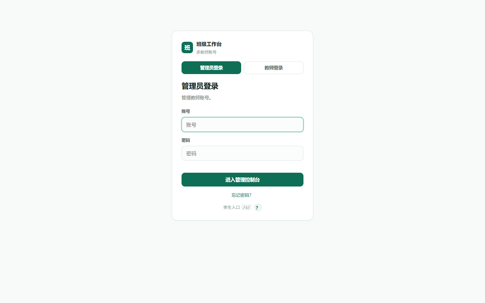
一个地址，两个身份：老师走 /teacher/，学生走 /s/。
教师登录要账号密码（账号不是自己注册的，得由管理员在 /admin 里建），忘了可以走密保重设，或者在服务器上跑一条命令重置。底下那行小字是给学生的提示——他们不用注册，用老师发的密码就能进。
② 首页
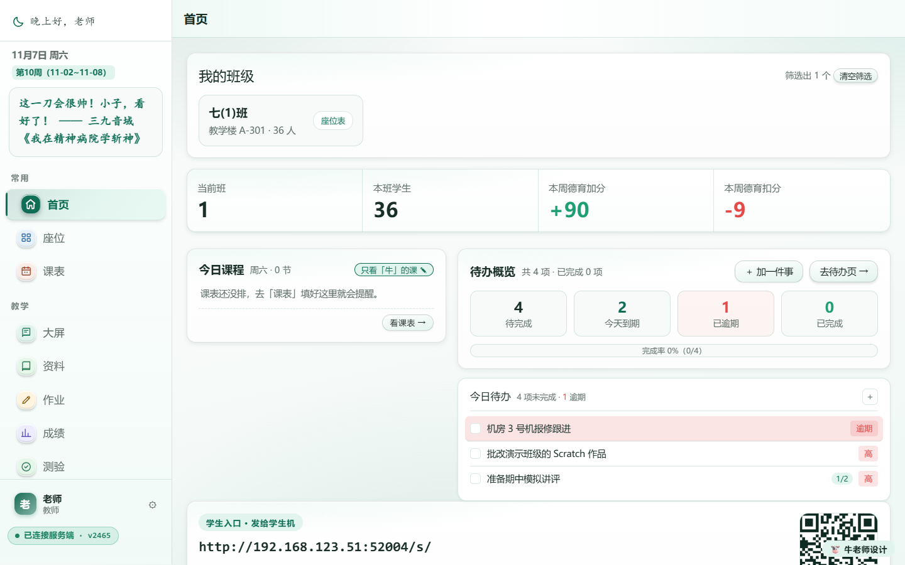
进门第一屏。
最上面是"我的班级"：每个班一张卡，点"座位表"直接跳过去。
中间四个数：当前班、本班学生 36、本周德育加分 +90、扣分 −9。
往下左边是今日课程（图里是周六没排课，提示"课表还没排，去「课表」填好这里就会提醒"），右边是待办概览：4 项、今日到期 2、已逾期 1，逾期那条"机房 3 号机报修跟进"直接标红。
最底下是学生入口：一条网址加一个二维码，直接投屏出去，学生在机房那台机器上照着输就能进。
③ 座位
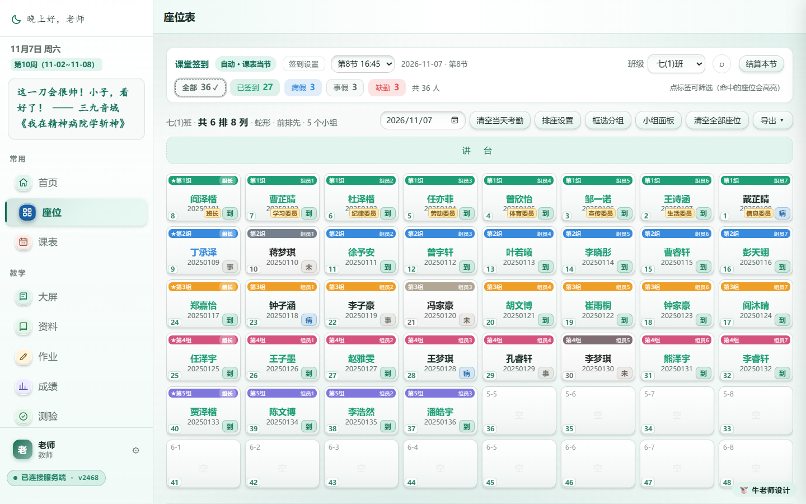
每天打开最多的就是这一页。
顶部是"课堂签到"卡：自动对齐课表当节（图里第 8 节 16:45），右边可以切班级、点"结算本节"。
再下面一排标签：全部 36、已签到 27、未到 3、事假 3、病假 3。点一下只剩那一类人，未到的名字直接列出来。
座位区是 6 排 8 列、弧形、前排先，分 5 个小组；讲台固定在上方。每个座位格上是姓名、学号、小组徽标，有的还挂着班干部职务牌和德育分，右上角是本节考勤状态（到 / 未 / 病 / 事）。
工具条：清空当天考勤、排座设置、框选分组、小组面板、清空全部座位、导出。
框选分组是我最得意的功能，完整保留了：按住鼠标拖一个框，12 个座位一起选中，起个组名，第 7 组当场生成，座位上的组徽标跟着换色。从框选到分组完成，十秒。
考勤也不用点。 1.0 里谁迟到、谁请假、谁没来，我一个个点；五十来人一节课点一遍，点到第三节就烦了——开头那句话就是从这来的。
2.0 把判定搬到了服务端，规则写死：
| 状态 | 判定 |
|---|---|
| 出勤 | 本节时间窗内登录（开始 5 分钟内） |
| 迟到 | 超过开始 5 分钟才登录 |
| 缺勤 | 开始 15 分钟仍未登录且未请假，自动记录 |
| 病假 / 事假 | 教师手动登记，优先级最高，不被签到覆盖 |
| 🔒 强制 | 教师任意指定，学生再签到也不改写 |
还有几个当时没想到、后来必须补的细节：
- 签到窗是"上一节下课 +1 分钟 ~ 本节下课"，当天第一节留课前 15 分钟；已经下课了不能补签；
- 课间十分钟按"下一节有排课"归属，学生提前到机房不算迟到；
- 本班这一节没排课，不产生考勤——防止"假全勤"；
- 缺勤之后又到堂签到，自动改判迟到，留痕。
图里那排标签（已签到 27 / 未到 3 / 病假 3 / 事假 3）就是这些规则跑出来的结果。点一个学生，面板里可以直接标病假、事假，或者强制设定本节（🔒 标记，学生再签到也不改写，直到你解除）。下课点"结算本节"，这一节就落库。
这些东西写进代码，比写在班规里管用。
④ 课表
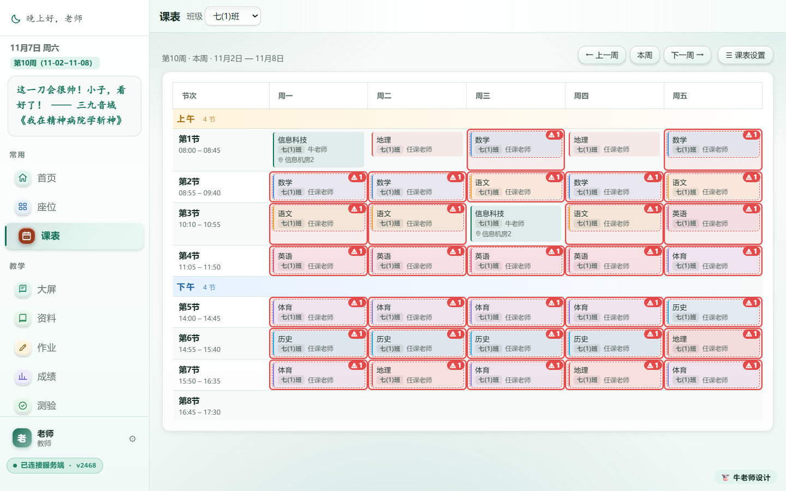
顶上班级下拉选到哪个班，就排哪个班的课。第 10 周、11 月 2 日到 11 月 8 日，上面可以翻周。
上午 4 节、下午 4 节，节次一行一行排，周一到周五横着铺，每格是科目、班级、老师和地点。
哪个格子跟哪个格子撞了（同一个时段给同一位老师排了两个班），它自己会算出来——红框描边，右上角一个"▲1"。演示数据里撞得多，真用的时候一眼就能看到该挪哪格。
⑤ 作业
四张统计卡：8 份作业、平均提交率 31%、待收 18 人次、已交 87 人次。
左边是提交率趋势（近 8 周、按周平均），右边是整体状态构成的环图：已交 78、迟交 5、订正 4、免交 3、未交 18，总提交率 83%。
再往下可以按类型筛（书面 / 实践 / 口头）、按状态筛（有未交 / 已交齐）、按时间筛（进行中 / 已截止）。
每份作业一张卡：科目和类型标签、标题、发布与截止时间、提交进度条，下面一行小数是已交 / 迟交 / 订正 / 免交 / 未交各多少人。右上角是"剩 6 天"或者"已截止"，底部按钮收作业、编辑、删除，右上角还能导出收交明细和作业清单。
⑥ 成绩
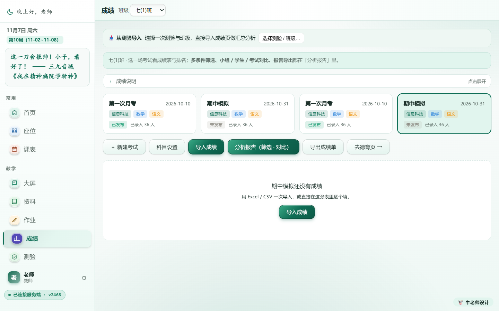
最上面一条"从测验导入"：选一次测验和班级，直接导入成绩页做汇总分析——测验和成绩是通的。
往下是考试卡片，一场考试一张：科目标签、发布状态、已录入人数。
按钮一排：新建考试、科目设置、导入成绩、分析报告（筛选 · 对比）、导出成绩单、去德育页。
选中一场考试，下面就是分数段分布、平均分、及格率优秀率这些（图里选中的"期中模拟"还没录成绩，所以主区是导入提示——录完就是柱状图和分析）。
⑦ 班级
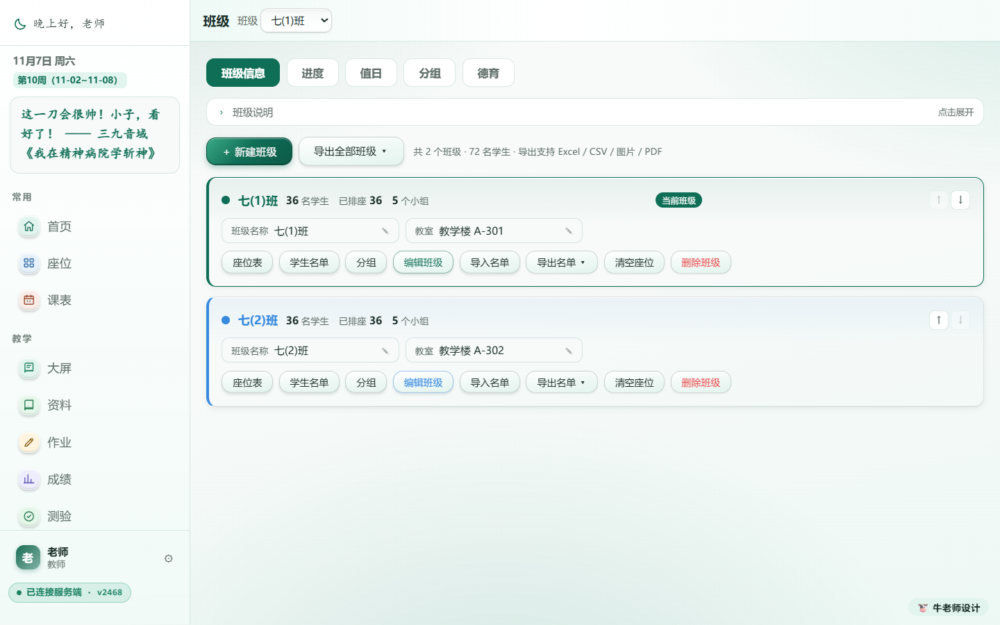
班级页是五个页签：班级信息 / 进度 / 值日 / 分组 / 德育。
1.0 里这是四个独立模块，现在收进一个页面——它们都是"看一眼就走"的东西，不值得各占一个导航项。
每个班一张卡：班名、学生数、已排座人数、小组数，班级名称和教室直接在卡上改。按钮是座位表、学生名单、分组、编辑班级、导入名单、导出名单、清空座位、删除班级。
⑧ 打字
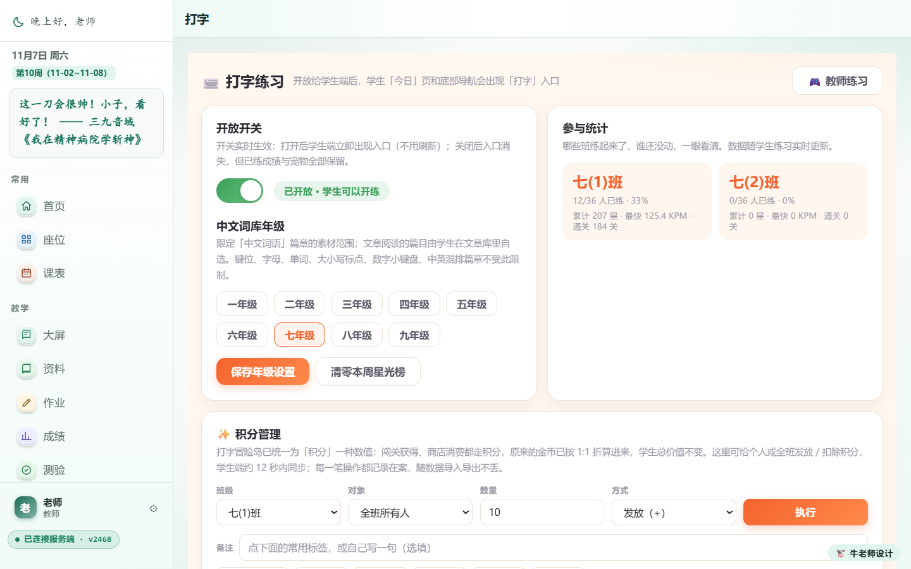
这是教师端的配置页，不是学生玩的界面。
一个开放开关：开了，学生端"今日"页和底部导航立刻出现"打字"入口；关了，入口消失，但成绩和宠物都留着。
下面选中文词库的年级（一到九年级），只影响"中文词语"那一章的素材范围。
右边是参与统计：每个班多少人练过、累计多少星、最快多少 KPM、通关多少关，学生一练数据就动。再往下是积分管理，可以按班或按人发放、扣除积分——打字攒的积分和老师发的积分是同一套。
⑨ 学生端 · 今日
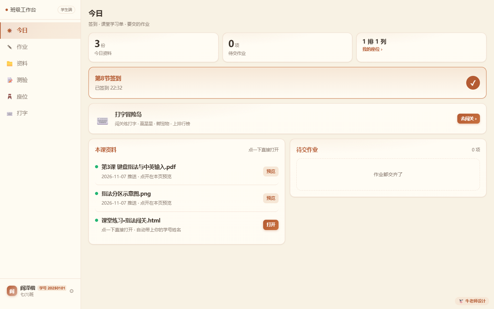
学生在机房电脑上打开 /s/ 就是这一页，不装 App，不用注册，输一次网址就进去了。下面四张学生端截图都是机房 PC 界面。
左侧是页签：今日、作业、资料、测验、座位、打字。
顶上三张卡：今天 3 份资料、0 项待交作业、我的座位在 1 排 1 列。
往下是签到卡："第 3 节签到，已签到"。迟到与否是服务端按课表时间算的，不是学生自己选的。
再往下是打字冒险岛的入口；最底下左右两块，左边是本课资料——老师当节下发的文件直接列在这，右边是待交作业。
⑩ 学生端 · 作业
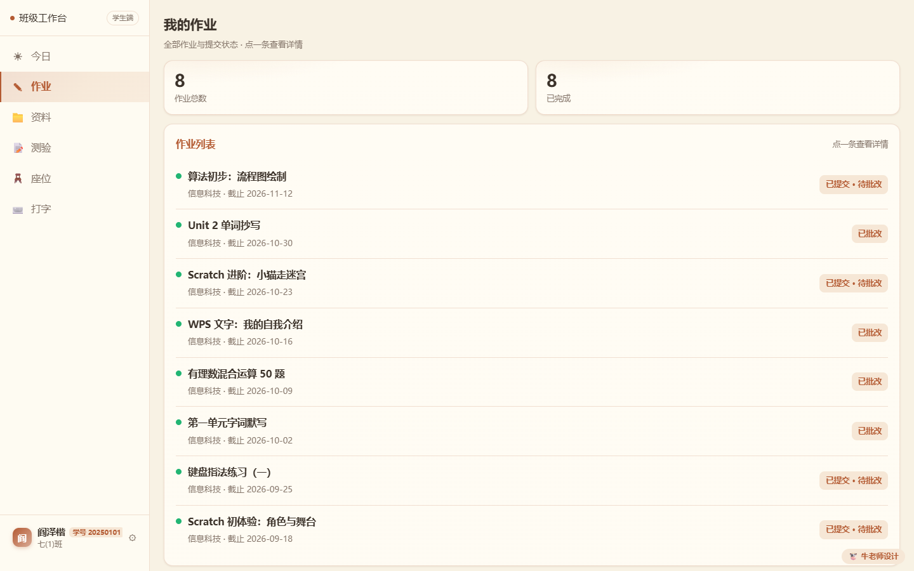
顶上两笔数：8 份作业、已完成 8 份。
列表一条一份：科目和标题、截止日期，右边是状态——已提交 · 待批改、已批改。
学生不用再问"我交了没"。
⑪ 学生端 · 资料
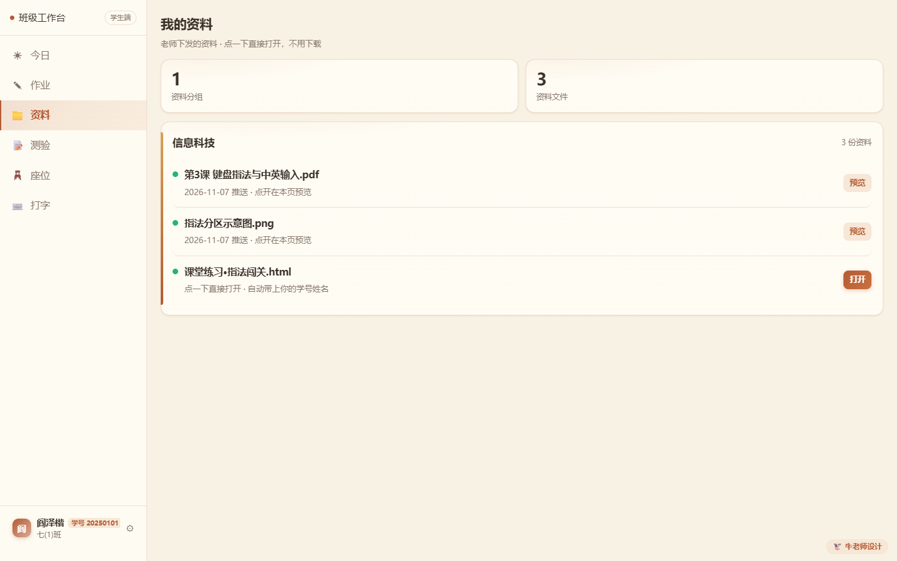
老师下发的资料，按课程分组，顶上两笔数：1 个分组、3 份文件。
这一页早一版叫"课程"，2.0.38 改成了"资料"——只列老师下发的，不再显示课表里的科目。课表（第几节上什么）那是给老师排课用的，学生知道下一节上机房就够了。
每个文件右边一个"预览"，点开在线看，不用下载，也不占学生电脑的磁盘；网页类的直接"打开"，还会自动带上学生的学号姓名。
⑫ 学生端 · 座位
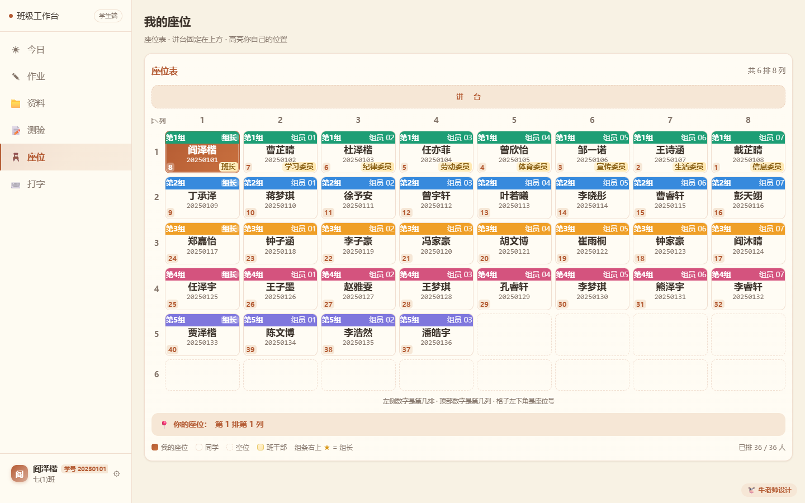
整间教室的座位表，讲台固定在上方，自己那格高亮（图里是第 1 排第 1 列）。
有个细节值得说：老师端可以把讲台设在上方或下方，学生端统一翻到上方显示，座位号仍然和老师那张表一致。
左侧数字是第几排，顶部数字是第几列，格子左下角是座位号。图例里标了班干部和组长，右下角还能看到全班 36 人都在自己的位置上。
四页看下来，学生端只有一个原则：只给本班、本人。
座位表是唯一会下发同班同学姓名的接口——只给姓名、学号、座位号、小组、班干部职务，不含电话、成绩、内部 id，也不带考勤状态。
手机号、家长信息、别人的成绩，在服务端就被裁掉了。
三、15 个模块，一个一个对
这是这篇文章最实在的部分。上一篇里我列了 15 个模块，这次挨个说它们去哪了、变成了什么。
| 1.0 模块 | 2.0 在哪 | 具体变化 |
|---|---|---|
| 座位表 | 常用 · 座位 | 拖拽排座、框选分组全保留；新增实时签到、按状态筛人、强制考勤、结算本节 |
| 考勤 | 并进「座位」 | 不再手点状态，服务端按课表判定：5 分钟内出勤、超 5 分钟迟到、15 分钟没到缺勤，请假优先 |
| 课表 | 常用 · 课表 | 新增节次时间重叠校验、同老师撞课标红、星期栏吸顶常驻 |
| 作业 | 教学 · 作业 | 新增提交率趋势、状态构成环图、导出收交明细；学生端能自己看交没交 |
| 成绩 | 教学 · 成绩 | 新增批量粘贴录入、及格率 / 优秀率、分数段分布、分析报告、从测验一键导入 |
| 德育 | 班务 · 班级（德育页签） | 记分逻辑没变，数据从本机搬到服务端 |
| 分组 | 班务 · 班级（分组页签） | 框选分组保留，组徽标、组内角色、成员管理都在 |
| 值日 | 班务 · 班级（值日页签） | 分区、岗位、轮换保留 |
| 学习进度 | 班务 · 班级（进度页签） | 保留 |
| 学生档案 | 班务 · 学生 | 新增账号状态、批量重置密码、成长报告、通讯录导出 |
| 班级管理 | 班务 · 班级 | 变成五个页签的统一入口 |
| 待办 | 其他 · 待办 | 新增今天 / 本周 / 全部、截止日、逾期提醒 |
| 工具箱 | 其他 · 工具 | 点名、计时器、番茄钟、自定义链接二维码；截图工具删了（下面说为什么） |
| 系统设置 | 顶栏 · 设置 | 新增模块开关、密保、数据备份、在线更新 |
| （首页 / 总览） | 常用 · 首页 | 1.0 没有独立首页；2.0 新增：班级概览、今日课程、本周德育、待办、学生入口二维码 |
上面这张表是总览，功能细节在上一节的图里都对着说过了。表里还有三页没单独给图，补在这里——
学生档案（班务 · 学生）：账号状态、批量重置密码、成长报告、通讯录导出都在这一页。
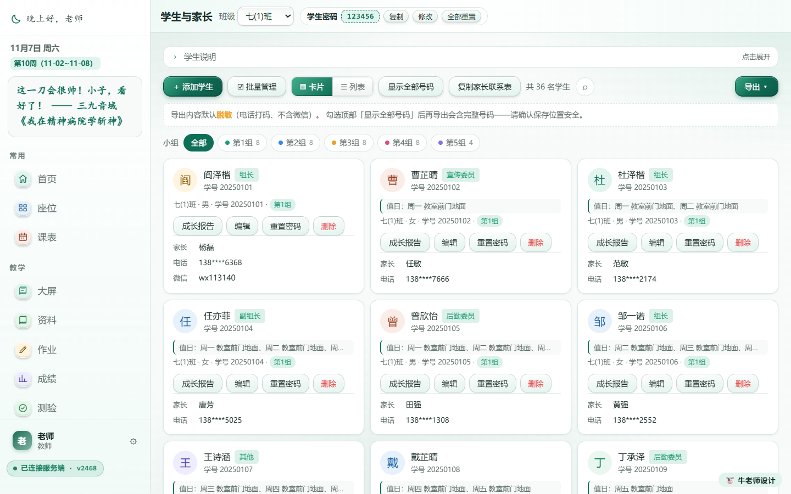
待办（其他 · 待办）：今天 / 本周 / 全部、截止日、逾期提醒，首页那个"待办概览"就是它的摘要。
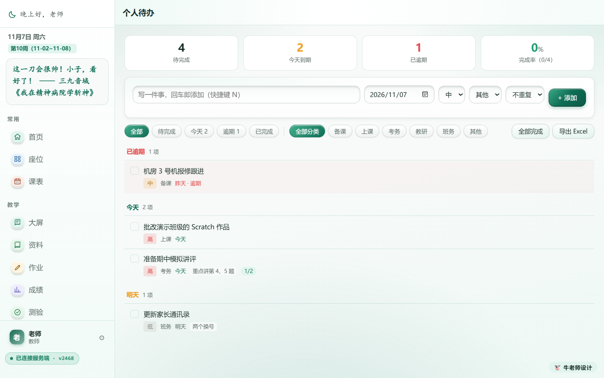
这里只补一件表里写不下的事——我删了一个功能。
工具箱：我删了一个功能
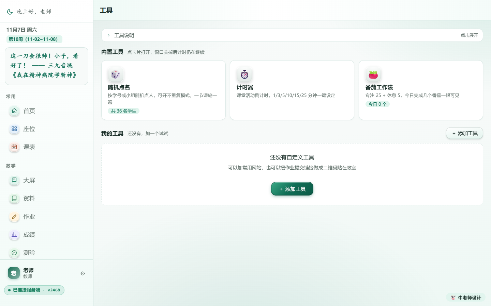
现在的工具页就三样内置：随机点名（按学号或小组机抽人，可开不重复模式）、计时器（1/3/5/10/15/25 分钟一键定）、番茄工作法（专注 25 + 休息 5）。下面留了"我的工具"，可以加常用网址，也可以把作业提交链接做成二维码贴在教室。
截图工具，2.0.32 删的。
原因很实在：局域网 http://192.168.x.x 下，浏览器根本不给屏幕捕获权限，只有 127.0.0.1 或 https 能用。老师在机房用 IP 打开，点截图就是"不支持"。
一个大部分时候用不了的功能，不如没有。
后来还删掉一个："学习单整页 HTML 存档"。以前学生一提交，系统会把整页 DOM 克隆一份存成 html。后来发现：真正有用的是学生交的那个文件，页面快照除了占空间没别的用。
功能不是越多越好。删掉用不上的，剩下的才转得动。
四、2.0 新长出来的五件事
前面那些图里没出现的，就是这一节要讲的。这一节的功能后台逻辑多，上一版只有文字，这次全部补了真机截图。
1. 大屏和学习单：一节课跑通了
这是 2.0 最费劲的一块，也是最值的一块。
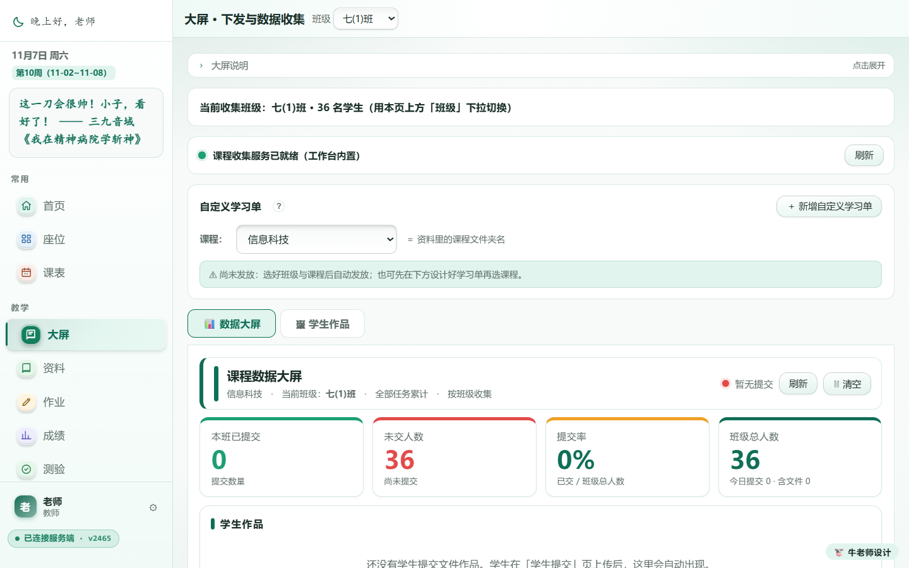
这就是大屏页：右上角选班级、选课程，中间是四个统计卡（本班已提交 / 未交人数 / 提交率 / 班级总人数），下面按任务分块，每个任务一个窗口。
流程是这样的：
- 教师在"大屏"页选课程 → 选学习单 → 按班下发；
- 学生端"今日"对应的课立刻出现"进学习单"；
- 学生点开，服务端验身份、验班级、验签到，签一张票，302 到学习单页；
- 学生作答 / 传文件，提交；
- 大屏实时出现：谁交了、交到哪个窗口。
换成上课的视角，是这样三段：
| 阶段 | 我做什么 | 学生看到什么 |
|---|---|---|
| 课前 2 分钟 | 班级下拉选到本节课的班，课程下拉选到对应文件夹，学习单自动下发 | "今日"页的"本课资料"里多出一条，带"打开" |
| 课中 | 投屏停在大屏页，看四个统计卡（本班已提交 / 未交人数 / 提交率 / 班级总人数）和任务窗口 | 点"打开"就进作答页，学号姓名已经带好，不用重填 |
| 讲解 | 点某个窗口的"设为大屏"，那一份放大到讲台屏 | 抬头能看到自己的作品被投上去 |
| 下课 | 点"清空"，本节归档，下一节重新开始 | 页面回到干净状态，历史记录不丢 |
统计口径也定死了几条，每一条都是踩过坑之后加的：
- 提交率按"本班应交人数"算，不是按年级或全校。36 人的班交了 9 份就是 25%，不会因为别的班交得多而虚高；
- 同一个学生只算最后一次提交。学生反复改、反复交，不会把提交数刷到 40 去；
- 按班隔离。七(1)班的大屏只收七(1)班的提交，同名同姓跨班也不会串——判定先看班级，再看学号或姓名；
- 只统计"提交"，不算正确率；
- 清空按"课程 + 活动"清，只清这一节，不动别的课，也不动已经归档的文件。
这块以前不是大屏，是 QuickForm。
QuickForm 是我用得最久的一个工具：收表单、做问卷、导出结果，体验很顺，1.0 的时候我干脆把它接进了自己的工作台，学习单就用它收。但它只知道"有人交了一份表"——不知道这个班 36 个人里谁没交，不知道交上来那份对的是哪台机器前的哪个人，更不知道谁这节课压根没签到。每收回一批，我还得拿名单一条条对：谁没交、谁交了两遍、哪个文件名对不上人。
上面那几条统计口径，就是那会儿一次次对出来的。所以 2.0 干脆把收件长进了大屏：提交一落库就带着票里的学号和班级，同一个学生只留最后一次，提交率按本班应交人数算。收完就能讲，不用再对一遍名单。
这里有个设计我当时纠结了很久：数据服务地址、任务号、学生身份，一个都不出现在学生页面上。
学生看到的链接是 /g/act/一串id，不是数据库地址，也不是自己的学号。票只存在内存里，12 小时有效，重启就失效。提交时服务端用票里的身份覆盖页面填的学号——防冒名。
签到闸门也在这一层：今天一笔有效签到都没有，学习单打不开，先回去签到。
2. 资料库：文件终于有地方放了
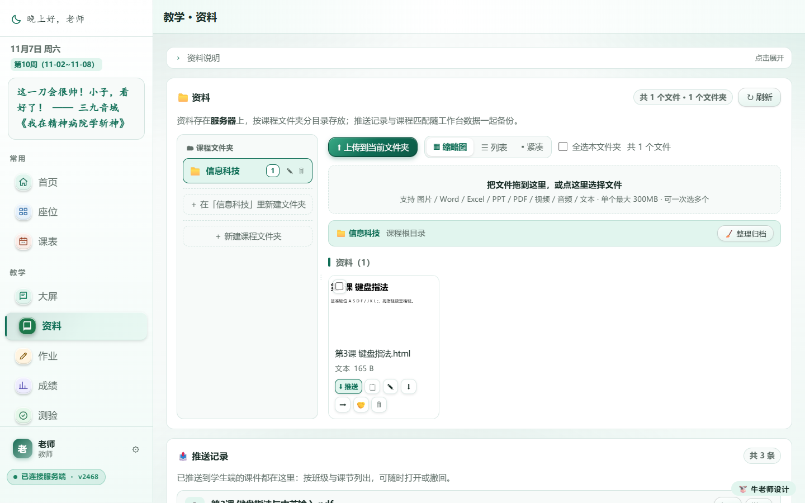
资料存在服务器上，按课程文件夹分目录存放：左边是课程树，右边是文件列表，可以缩略图、列表两种视图看，网页文件可以"设为学习单"。推送记录按班级与课节列在下面，可随时打开或撤回。
1.0 没有文件管理。课件在电脑文件夹里，学生在群里传，收上来的作业在下载文件夹堆着。
2.0 的资料库是"目录即数据"：
课件根 / 课程 / 子文件夹 / 文件老师用资源管理器直接拷文件进去，刷新就能看到；拷走整个目录就是完整备份。左边树、右边列表，三种视图，网页文件可以"设为学习单"。
更关键的是自动归档。学生交了文件，服务端立刻复制一份到：
<课程>/<班级>/<学号-姓名>/<原文件名>
例：信息科技/七1班/20250108-张三/作业.docx不用老师打开大屏，不用手动点归档。同名不同内容存成 作业 (2).docx，永不覆盖；纯数据提交不建文件夹。
2.0 早期不是这么做的：归档靠前端在大屏刷新时顺带跑，老师关掉页面就永远不归档——"学生说交了、资料里没有"就是这么来的。现在改成提交时服务端做，才算真修掉。
3. 测验：七种题型，答案不下发
2.0.38 刚加的。
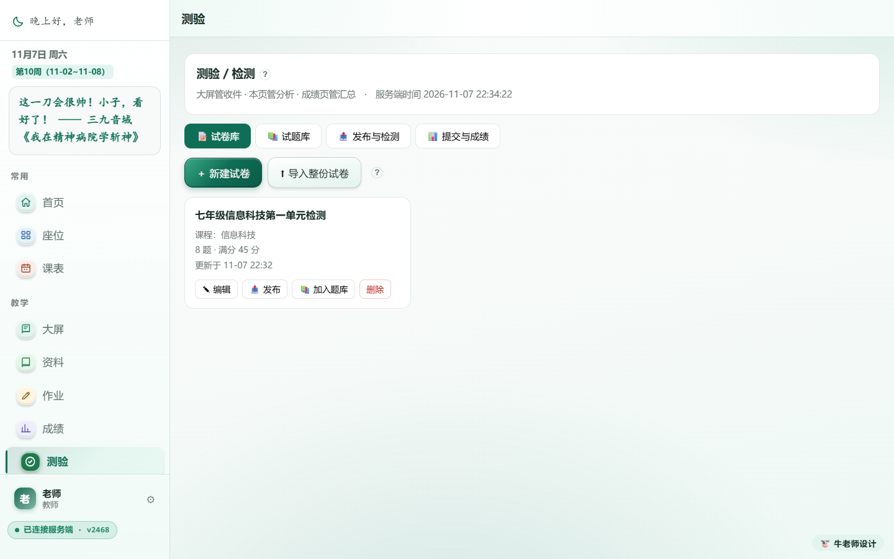
测验页四个页签：试卷库、试题库、发布与检测、提交与成绩。新建试卷或导入一份文本试卷都行——图里这份"七年级信息科技第一单元检测"就是从文本解析进来的，8 题、满分 45 分，点"发布"选班级就下发。
单选、多选、填空、判断、连线、简答、图片上传，七种题型。逐题设分值和答案，可以设开放与截止时间、提交次数上限。
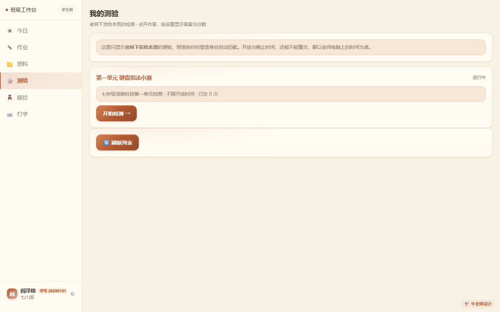
学生端"测验"页签里就是老师发给本班的检测，一场一行，状态一目了然。
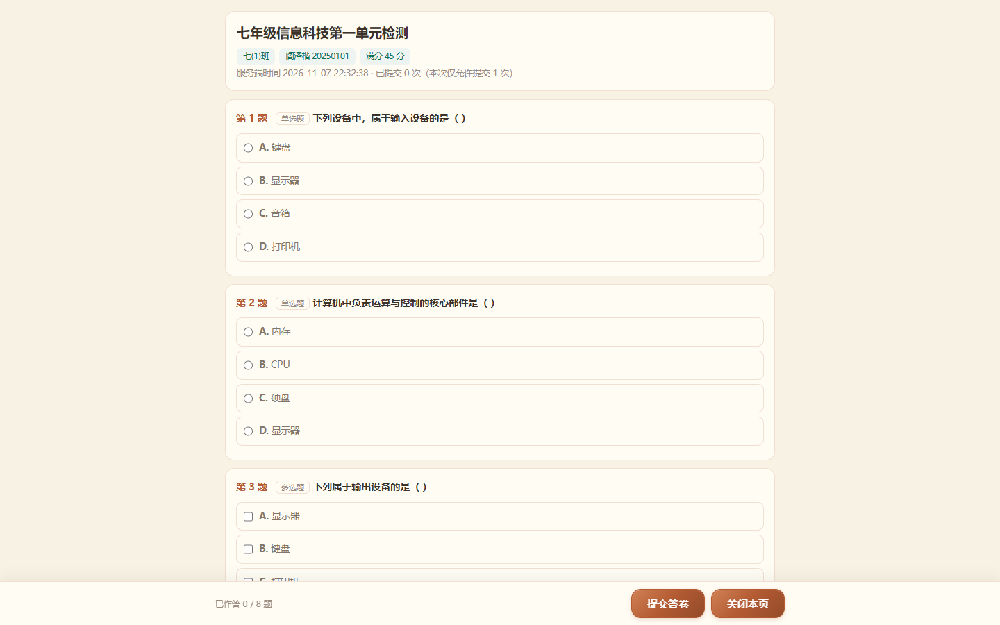
点开作答是独立的一页：题目、选项、作答区，交卷后按老师设的开关决定显示答案还是分数。
两个开关是分开的：提交后是否立即显示答案、是否立即显示分数。都在服务端出网前裁剪——学生拿到的试卷里，正确答案、分值、配对关系这些字段根本不存在，连线题只给打乱后的右项。
判分在服务端。客观题自动判，简答和图片上传要人工批阅，没批就是"待批阅"，不冒充 0 分。
三处入口分工也定死了：
| 入口 | 干什么 | 不干什么 |
|---|---|---|
| 大屏 | 实时收件看板：谁交了、交到哪个窗口 | 不显示答案分数，不算正确率 |
| 测验页 | 唯一的逐题正确率、按班成绩分析 | 不另存一份提交、不另算一套分 |
| 成绩页 | 选测验 + 班级 → 换算百分制 → 写成一场考试 | 不绕过统计口径直接读原始答卷 |
三处读同一份提交，同一次发布同一个学生只算最后一次。
为什么大屏不算正确率
刚做出来的时候我也想把正确率塞进大屏，试过之后放弃了。
上课的时候我要的是"还有 4 个人没交，我可以再等两分钟"，不是"这道题全班正确率 62%"。后者是把课上成教研，前者才是上课。
对错和分数留给测验页和成绩页。三处看同一份提交，但各回答各的问题。
4. 打字冒险岛
上一节第 ⑧ 张图是教师端的开关，学生端玩的是另一套东西。
信息科技课有个绕不开的起点：很多七年级学生不会用键盘，两只食指戳，眼睛在键盘和屏幕之间来回找。这个基础不打掉，后面讲文字处理、讲编程，全都在补打字。
可打字讲是讲不会的。我说一百遍"手指放在 F 和 J 上"，不如让他自己敲二十分钟。问题是怎么让他愿意敲。
打字冒险岛把"练指法"拆成能一关一关过的小目标，八个篇章：
| 篇章 | 练什么 | 为什么排在这个位置 |
|---|---|---|
| 键位熟悉 | 基准键 F、J 和周围几个键 | 先把手放对地方，不求快 |
| 字母位置 | 26 个字母的实际位置 | 手位固定之后再扩到全键盘 |
| 英文单词 | 成词输入 | 从"按键"过渡到"打词" |
| 大小写与标点 | Shift、逗号句号引号 | 加了新手指，速度会掉，得单独练 |
| 数字小键盘 | 右侧数字区 | 换一只手，独立成章 |
| 中文词语 | 拼音输入 | 换输入法，等于从头再练一次 |
| 中英混排 | 中英切换 | 真实文档的样子 |
| 文章阅读 | 整段连续输入 | 到这一步才谈速度和耐力 |
七年级一个学期能走完前四章就不错了，后面几章是给学得快的学生留的。
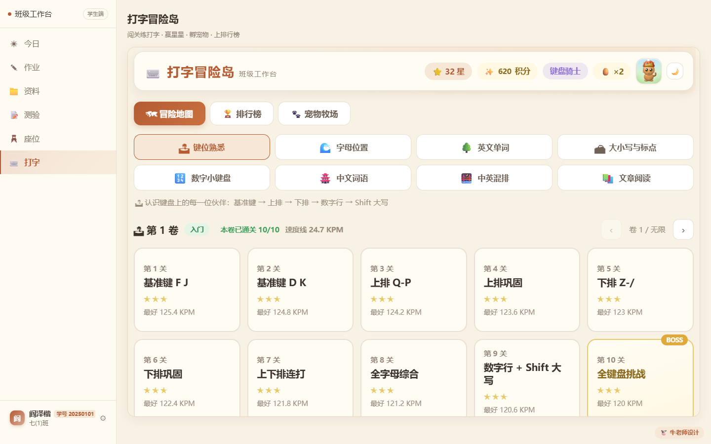
学生端进去就是这张冒险地图：顶上八个篇章随便切，每卷 10 关，每张关卡卡上是这一关练什么、拿了几颗星、最好成绩多少。
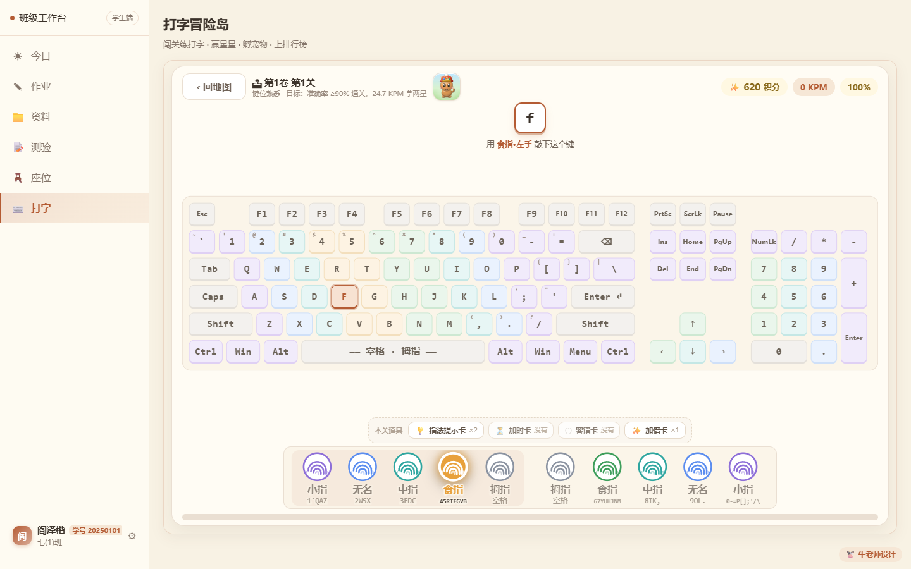
进一关长这样：中间是课文行，下面是整块键盘图和左右手指法分区，按到哪个键、该用哪根手指，高亮直接标出来。
每章每卷 10 关，第 10 关 BOSS，卷号无限递增。每关内容随机生成，防止背顺序——背下第 3 关那串字母，换一局就没用了。
逐字变色、实时速度和准确率、三星结算；指法高亮跟着按键走，大写头顶有 ⇧ 角标，错字红标但课文行永远显示原文（改掉的话，学生就不知道自己在打什么了）。
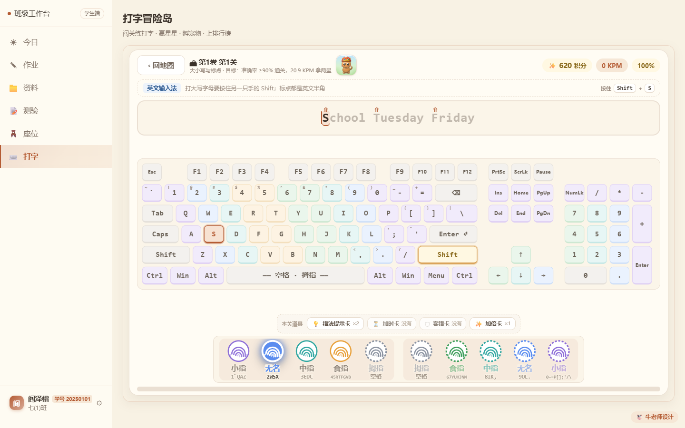
"大小写与标点"篇章专门练 Shift：要打大写字母的那个键，头顶会浮一个 ⇧ 角标，Shift 键同时点亮，按错了角标不会消失。
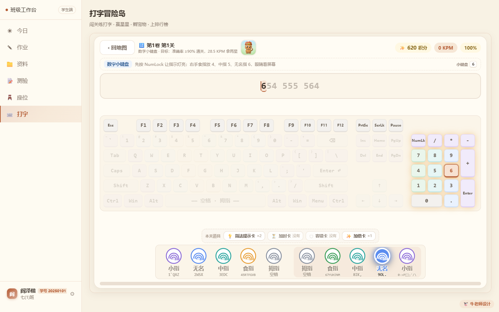
"数字小键盘"是独立的一章：主键盘区压暗，只亮右边的小键盘，提示条告诉你先按 NumLock、右手 4-5-6 定位。
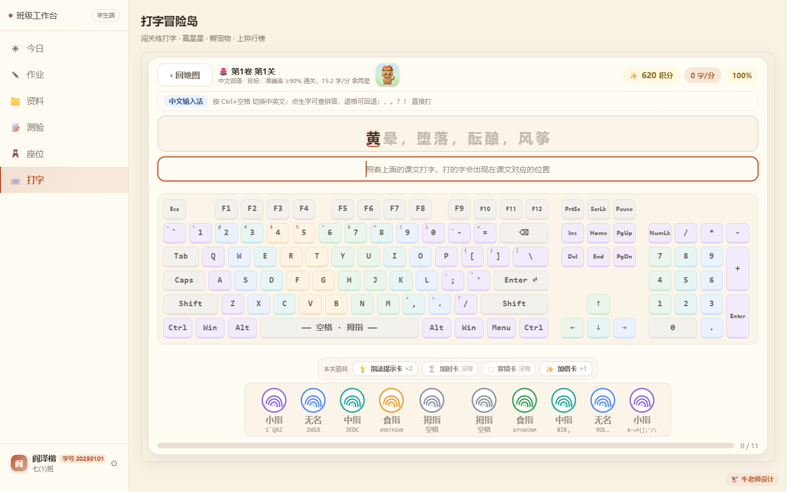
"中文词语"切换到中文输入法打拼音，输入法提示条会告诉学生"按 Ctrl+空格 切换到中文"，打出的字会出现在课文中对应的位置。
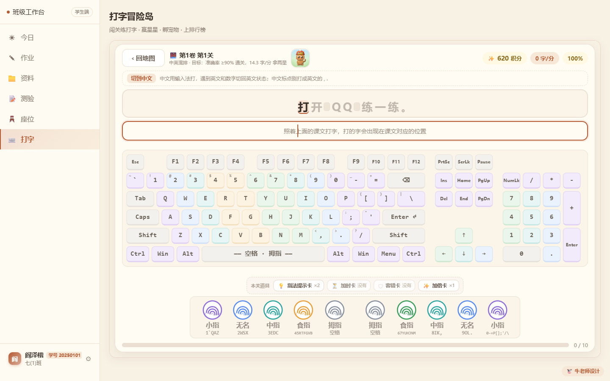
"中英混排"是真实文档的样子：中文、英文、数字、标点混在一句里，输入法徽标跟着当前字符自动变。
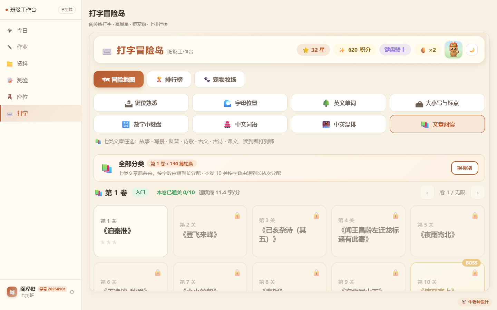
最后的"文章阅读"是长文练习：七类文章任选（故事 · 写景 · 科普 · 诗歌 · 古文 · 古诗 · 课文），每卷 10 关按字数由短到长分配，图里第 1 关就是《泊秦淮》。
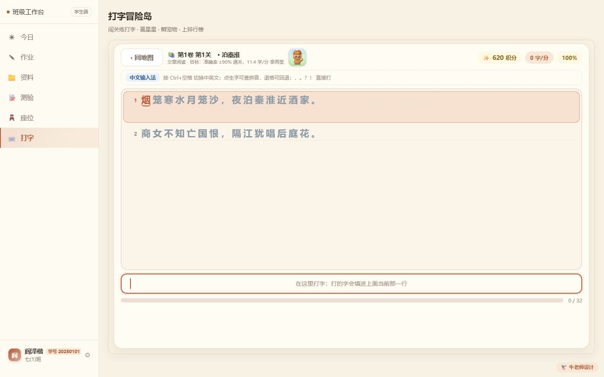
长文关不显示键盘和指法图——屏幕全留给课文，读到哪打到哪，打完一行自动接下一行。
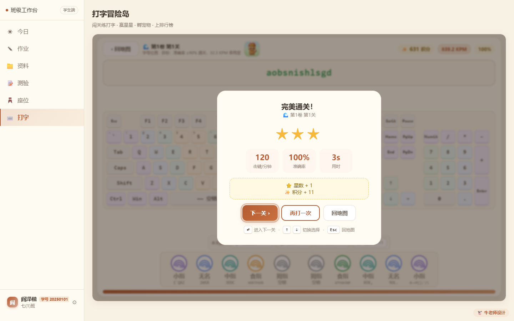
打完一关当场结算：几颗星、击键每分钟、准确率、用时，星数和积分涨了多少直接写在奖励栏里。
星星有两个用处：换道具（指法提示卡、加时卡、容错卡、加倍卡，默认都没有），和攒着解锁装扮、孵宠物。
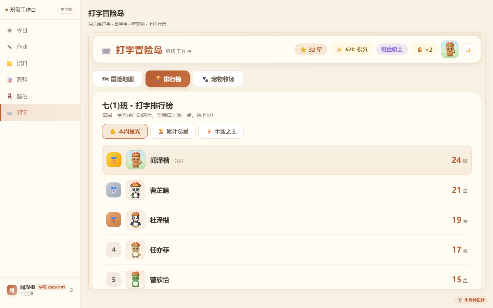
班级排行榜按本周星光 / 累计总星 / 手速之王三个榜切换，每周一自动清零重算，每个学生头顶跟着自己的出战宠物。
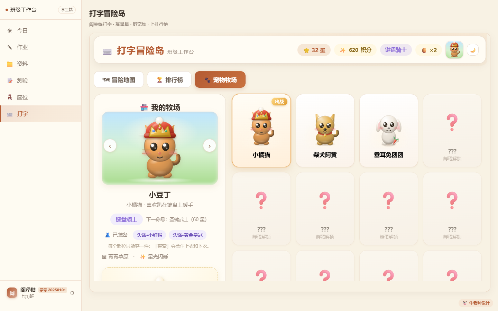
牧场里有 12 只原创宠物，BOSS 首通掉蛋，孵出来就能出战、穿装扮——图里这只小橘猫戴了小红帽和黄金皇冠，站在青青草原上，出战还挂着星光特效。图鉴没孵出来的，就还是问号。
这套东西看着像游戏，其实解决一个很朴素的问题：打字练习本身没有成就感。多打一百个字不会让任何人兴奋，但多一颗星会。
成绩由服务端按公式重算，不信任客户端；老师关掉开关后接口直接拒绝，不是把按钮藏起来而已。
5. 多老师、备份、在线更新
这三件不是课堂功能，但没有它们，这东西只能自己玩。
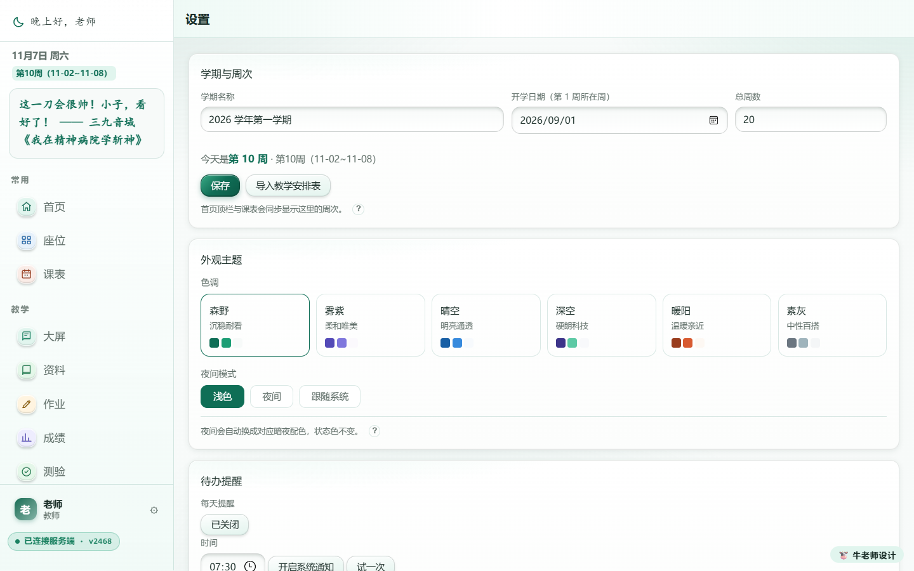
设置页里能看到的：学期与周次（首页和课表的周次都从这算）、六套外观主题、待办提醒；往下翻是多教师账号、备份恢复、在线更新。
多教师账号隔离：管理员控制台管账号，每个教师一个工作区（accounts/<id>/），数据互不可见。资料可以共享——勾选目标教师，服务端复制一份过去，不动源文件。老单账号数据升级时映射成 default，零迁移。
加密备份：设置里一键导出 .cwbackup，设一个 ≥6 位的备份密码，内含 29 张表 + 配置 + 口令哈希 + 打字成绩 + 学生作品附件。备份文件本身是密文，换电脑导入要输同一个密码。
导入有两道拦截：空表、或本机有数据而备份 0 行 → 拒绝；本机 ≥5 行而备份 <40% → 二次确认。失败不改动任何数据。
在线更新：每 24 小时查一次版本，发现新版提示，下载 → 校验 sha256 → 换装 → 重启。失败自动回滚，也能手动回滚。更新只替换程序文件，数据原地保留。
五、数据还在你自己的机器上
上一篇我专门写了一节"数据不出我的电脑"。2.0 这句话要改一下：
数据不出你自己的机器。
只不过这台机器从"你的电脑"变成了"你的 NAS / 你的小主机 / 机房里那台常开的电脑"。
- 业务数据在一个 SQLite 文件里，29 张表；课件、学生附件、试卷文件在旁边的目录；
- 学生端只拿得到"本班 + 本人"的字段投影，手机号、家长信息、他人成绩在服务端就裁掉；
- 试卷和答案不进同步快照，否则等于把答案发给学生；
- 备份文件是 AES 密文，密码不存明文；
- 不需要任何第三方云服务，不联网也能跑。
代价是：你得有一台常开的机器，得自己做备份，得自己放行防火墙端口。
这就是"数据自主"的真实价格。我觉得值，但你得知道。
还有几句实话，一起说完
讲"它能干什么"很容易，讲"它不能干什么"才见真心。所以补在这里：
它需要一台常开的机器。 NAS、小主机、机房那台不关的电脑都行。但它不是云服务，你关机，学生就进不来。
它只在局域网里。 不出公网，不需要域名和备案，代价是学生必须连同一个 Wi-Fi。机房如果开了 AP 隔离，设备之间互相不通，得找网管关掉。
它不替你做判断。 谁能请假、谁该扣分、哪份作业算迟交，规则写死在代码里，但边界情况还得人来定。工具只保证"改了就记上"，不保证"改得对"。
它是按机房电脑设计的。 学生端面向 1366×768 以上的机房屏幕，一节课 40 分钟，学生在同一台机器上签到、看资料、交文件。手机能打开，但排版会挤——我的课都在机房上，就没往这上面花时间。
一个班用很顺，一所学校用要慎重。 我没做过几十个班、几千人的压力测试，也不知道并发高了会怎样。它的定位就是"一个老师带着几个班"，别拿它当校级平台。
知道这些再决定要不要装，比看完功能就动手更靠谱。
六、这一个月，我主要在修什么
上一篇说"AI 写了 2 万多行"。这次重写完，app/ 下是 46 个源码文件、6.7 万行。
版本号已经走到 2.0.38，中间三十多个小版本，几乎每次都是"改一处、验一处"。
听起来很顺，实际上大部分时间在修那种"看起来不是 bug 的 bug"。挑四个讲。
① 弹窗突然变成空白
管理员控制台点"重置密码"，弹窗只剩一个壳，正文全空。
查了半天，代码没问题。真正的原因是：弹窗类名用了 ad-*（.ad-ov / .ad-body / .ad-btn），uBlock、AdBlock 这类插件会把 [class^="ad-"] 当成广告块 display:none。
卡片和按钮还在，中间的正文和输入框被隐藏了。
改名的改法很土：全部换成 wbd-*。但从那以后我知道，前端类名也要避开广告拦截器的黑名单。
② macOS 更新完，双击没反应
Windows 上打包，macOS 上解压，.command 文件的权限从 755 变成 644，双击就是"没有权限打开"。
根因在 zip：ZipInfo 默认 create_system = 0（FAT/MS-DOS），解压器看到"DOS 文件系统"就忽略 Unix 权限位。
修法是写 create_system = 3 + external_attr = mode << 16，构建完再自检一遍，权限不对直接让构建失败，不产出坏包。
③ Windows 上重启服务，服务全没了
自动更新完点"重启"，结果两个进程都没了。
因为 Windows 的 os.execv 不是 Unix 的"原地换映像"，而是"先起新进程、再退旧进程"。新进程启动时探测端口，旧进程还在监听 → 判定"已有一个实例在运行" → 新进程直接退出；旧进程随后也退。
修法：重启前先 server_close() 释放监听，给新进程带 WB_RESTARTING=1 标记，端口被占也只等它释放（最多 8 秒），不当成重复启动。
④ 导入 8MB 备份，页面卡死 15 秒
局域网 http:// 下 crypto.subtle 不可用，AES 解密只能用纯 JS 实现，速度 0.54 MB/s。8MB 要 14.9 秒，全程同步占用主线程，页面定格。
改成按 64KB 分片解密，每片让出主线程（约 120ms），带进度条。总耗时只多 5%，但界面全程能点。
顺带确认了一件事：服务端从来不是瓶颈（导入 1000 行 0.13 秒）。以后再遇到"导入慢"，先测前端解密，别去改数据库。
还有一堆小的：学生上传的文件名变成 作业.txt（编码三重转错，单独写了个 fix_filename()）；归档路径多拼了一层 activity/activity/；学习单身份在页面上显示两遍；资料里删个文件就被弹回课程根目录……
这些东西不会出现在功能列表里，但它们决定了一个东西"能不能每天用"。
七、三条经验，比上次更贵
上一篇我给了三条：要求写到细节、规矩提前立死、一次只做一个模块。
这次重写，三条都还在，但要各加一句。
① 先定数据模型，再谈界面
1.0 是"页面驱动"：想到一个模块，画一个页面，数据塞进 localStorage。
2.0 不行。29 张表、三个端、实时同步，字段一改，三处全崩。
所以这次我学乖了：先把"班级 / 学生 / 座位 / 考勤 / 作业 / 成绩"这些实体的关系画清楚，谁是主键、谁引用谁、删除时谁跟着删，定完了再让 AI 写界面。
界面可以改，数据模型改一次要脱一层皮。
② 边界比功能重要
"学生能看到什么"这个问题，比"再加一个功能"重要十倍。
2.0 里每一处学生接口都要过一遍投影：这个字段该不该给他？给了会不会顺带泄露别人？关掉模块后接口是不是真的 403？
试卷不进同步、座位表不带电话、提交用票里的身份覆盖页面填的学号——这些都是边界，不是功能。
功能漏了能补，边界漏了是事故。
③ 验收必须真机，不能只看代码
AI 说"已修复"的时候，通常是真的改了代码，但不等于真的好了。
这次每个版本我都跑一遍真机验收：登录走真实表单、hash 路由加 ?v=N 防缓存、截图存证。53 张截图一轮，登录页 401 是已知噪音。
听起来很笨，但它拦住过"接口返回 200 但页面没变"、"改了样式但被缓存"、"本地好使部署后 404"。
AI 写得快，验收得慢。慢的那一步不能省。
八、开源了，直接拿
项目用 MIT 许可证开源，仓库里没有任何真实班级、学生、成绩数据，克隆下来是一套空白工作台。
仓库地址：
- Gitee（国内快）：
https://gitee.com/shyxiaoniu/teacher-workbench - GitHub（镜像）：
https://github.com/Shyxiaoniu/teacher-workbench
发行包直链（点开就下，不用装 Git）：
https://gitee.com/shyxiaoniu/teacher-workbench/raw/main/dist/班级工作台2.0.38-261106.zip也可以进仓库，点 dist 目录自己找最新那个 zip。约 5MB。
装法一：直接运行（Windows / macOS，最简单）
适合：自己的办公电脑、笔记本、机房临时用、没有 Docker 的环境。
前置条件： Windows 10 以上或 macOS，Python 3.9 以上。
Windows 装 Python 时务必勾选 "Add Python to PATH"，否则双击启动脚本会提示找不到 Python。如果你拿到的是带 runtime/ 目录的完整离线包，则不用装 Python，解压即用。
- 下载
班级工作台2.0.38-261106.zip，解压到一个路径不含空格的目录； - Windows 双击
app\启动教师端.bat；macOS 双击app/启动教师端.command；（第一次运行 Windows 会弹防火墙，必须勾选"专用网络"并允许） - 浏览器打开
http://127.0.0.1:20020/； - 首次启动时，终端窗口会打印管理员账号和初始密码；
- 学生连同一个 Wi-Fi，浏览器打开
http://<这台电脑的局域网IP>:20020/s/。
[workbench] 管理员账号 teacher ／ 初始密码 t12345678
只在首次启动打印这一次，登录后请尽快改掉。注意：这是"管理员"账号，不是上课用的教师账号。它只能进
http://127.0.0.1:20020/admin，进去只做一件事——建教师账号。拿它去登教师端，会被弹回登录页。
忘了教师密码：
python launch.py --reset-password。
换端口：启动时加--port 20021。
装法二：Docker（NAS / 常开小主机，推荐长期用）
适合：群晖、威联通、Unraid、软路由、迷你主机。装好 Docker 和 Compose 就行。
git clone https://gitee.com/shyxiaoniu/teacher-workbench.git
cd teacher-workbench
cp .env.example .env
docker compose up -d --build等 docker compose ps 里 workbench 和 gateway 都变成 healthy（init 跑完就退出，是正常的）。
浏览器打开 http://<NAS的局域网IP>:8080/，教师端是 /teacher/，学生端是 /s/。
.env 里只需要改一个地方：WEB_PORT（对外端口）。TZ=Asia/Shanghai 不要动，考勤按本地日期归档。首次部署建议把 WB_ADMIN_PASSWORD 改掉。
常用运维：
| 目的 | 命令 |
|---|---|
| 看状态 | docker compose ps |
| 看日志 | docker compose logs -f workbench |
| 升级 | docker compose up -d --build（数据不丢） |
| 停止 | docker compose down（别加 -v，会删数据卷） |
| 忘记密码 | docker compose exec workbench python launch.py --reset-password |
装完先做这七步
- 管理员页：浏览器打开
/admin，用终端打印的管理员账号登录，先建一个教师账号（填登录账号、姓名、初始密码，密码至少 8 位）——这一步不做，教师端进不去； - 班级页：新建班级；
- 学生页：导入名单（支持从 Excel 直接粘贴）；
- 课表页：设节次时间，按周排课；
- 学生端控制台：设密码策略（统一初始密码 / 独立密码 / 首次登录必改 / 一键重置）；
- 资料页：建课程文件夹，上传课件；
- 大屏页：选课程 → 选学习单 → 按班下发。
之后老师用自己的教师账号登 /teacher/，学生打开 /s/，选班级、选学号、输密码，就能签到和进学习单了。
要几个老师一起用，就在管理员页多建几个教师账号。管理员只管账号，班级、学生、资料这些仍在教师端各自配置；每个教师的数据和文件是分开的，互不干扰，也不会互相看到对方的班。
四个最容易踩的坑
用终端打印的账号登教师端，进不去。 那个是管理员账号，只能进 /admin。教师端只认教师账号，得先在管理员页建一个，再拿它登 /teacher/。这是我被问得最多的一个问题，所以放在第一个说。
学生连不上。 先确认在同一个局域网，再用 http://服务器IP:端口/s/（不是 127.0.0.1）。机房如果开了 AP 隔离，设备之间互相不通，找网管关掉。
启动日志打印了两条学生端地址。 正常。192.168.x.x 是物理网卡，给学生用；172.16~31.x.x 通常是 Hyper-V / WSL / Docker 的虚拟网卡，只有本机打得开。
改了端口，二维码还是旧地址。 二维码按老师当前打开的地址生成。用 127.0.0.1 打开就会拿到本机地址，换局域网 IP 访问，或设 WB_PUBLIC_URL。
九、把话说清楚：MIT 开源，但它到底能干什么
装之前，先看清边界。这一节不讲功能亮点，只讲"它是什么、不是什么"。
一句话定位
它是一套免费开源的、跑在你自己局域网里的班级日常工具。 代码在 MIT 许可证下公开，谁都能下载、使用、修改、再分发；但它不是一个云服务，也不是一个学校级平台——没有服务器在替你跑，没有客服在替你修，机器是你自己的，数据也是你自己的。
它具体能做什么
| 能做 | 说明 |
|---|---|
| 管一个班的日常 | 班级、学生名单、座位、考勤、作业、成绩、德育分、分组值日，共用一份名单，不各存一套 |
| 课堂发放与收件 | 大屏选课程 → 按班下发学习单 → 学生点开作答/传文件 → 大屏实时看谁交了；全班只算最后一次提交 |
| 资料与文件归档 | 课程文件夹当资料库，课件按课程管；交上来的文件自动按「课程 / 班级 / 学号-姓名」落盘 |
| 课堂检测 | 七种题型，按班发布，学生作答后教师端看逐题正确率与按班成绩；答案不下发给学生 |
| 打字练习 | 八个篇章、无限关卡、宠物与排行榜，教师端一个开关决定是否开放 |
| 局域网内自托管 | 一台常开电脑/NAS 就能跑，Windows 双击即用或 Docker 一条命令；数据落本机 SQLite，不出门 |
| 多老师共用一套 | 管理员建多个教师账号，各自的班级、学生、文件互相隔离 |
它明确不能做什么
| 不能做 | 原因 / 边界 |
|---|---|
| 当云服务用 | 没有公网托管、没有域名备案。机器一关，学生就进不来；跨校、居家访问都不在范围内 |
| 当校级平台用 | 定位是"一个老师带几个班"，没做过几十个班、几千人并发的压力测试，也没有学校级的权限体系与教务对接 |
| 替你做判断 | 谁能请假、谁该扣分、哪份作业算迟交，规则写死在代码里，边界情况仍要人来定。工具只保证"改了就记上"，不保证"改得对" |
| 自动批主观题 | 客观题能判对错，编程题、操作题、作文这类不判分，只收件、只统计交没交 |
| 手机上舒服地用 | 界面按机房电脑（1366×768 以上）设计，手机能打开但排版会挤，没有 App、没有小程序 |
| 家长端 / 家校沟通 | 没有家长账号、没有短信、没有微信推送。家长信息只是名单里的字段，不对外发送 |
| 帮你保数据 | 备份要你自己点、自己存。它不会自动传到网盘，硬盘坏了也不会自己恢复 |
什么场景适合装
- 一个信息科技（或任何学科）老师，带 3—8 个班，有固定的机房或教室电脑；
- 上课流程相对固定：签到 → 发任务 → 学生做 → 当堂看提交 → 下课归档；
- 机器就在教室里或办公室，学生和老师在同一局域网；
- 你愿意自己维护一台机器，也愿意自己保管备份。
什么场景不适合
- 需要校外访问、家长手机上看成绩 → 这套不解决；
- 学校已经有教务系统，要求数据对接、统一身份认证 → 这套没有接口，也不打算做；
- 想找"开箱即用的商业服务"，出了问题有人 7×24 上门 → 这是开源项目，问题走 issue，作者不承诺响应时间；
- 指望它替代教学判断（自动评优、自动排名、自动给建议）→ 它只摆事实，不下结论。
许可证与支持，说白一点
MIT 是很宽松的许可证：你可以免费用在课堂上，可以改成自己要的样子，也可以打包给同事、给别的学校，甚至商用；唯一要求是保留版权声明和许可证文本。
与之对应的是没有任何担保：代码按"现状"提供，出了数据问题、教学事故，作者不承担责任；也没有服务等级承诺（SLA）、没有售后电话。仓库里能提 issue，我看到会回，但那是"有空就回"，不是工单。
一句话收尾：它是一个老师自己做的工具，好用、免费、可改，但它只对你那台机器和那几个班负责。
最后
1.0 做出来的时候，我觉得最得意的是"一个文件，双击就能用"。
2.0 做出来之后，最得意的东西变了：学生在下面点一下签到，我投屏上那个格子就绿了。
那一瞬间，工具才真的变成课堂的一部分。
这一个月，近万积分，三十多个版本，6.7 万行代码。我不是程序员，全程没写一行代码。我只是把"我想要什么"讲清楚，然后一遍一遍地验收。
东西开源了，MIT，随便用、随便改。唯一的请求是：别把学生真实信息传到公网。
如果你也在做类似的东西，或者装的过程中卡住了，评论区说一声。
项目：班级工作台 2.0 · MIT License · Copyright (c) 2026 Shyxiaoniu